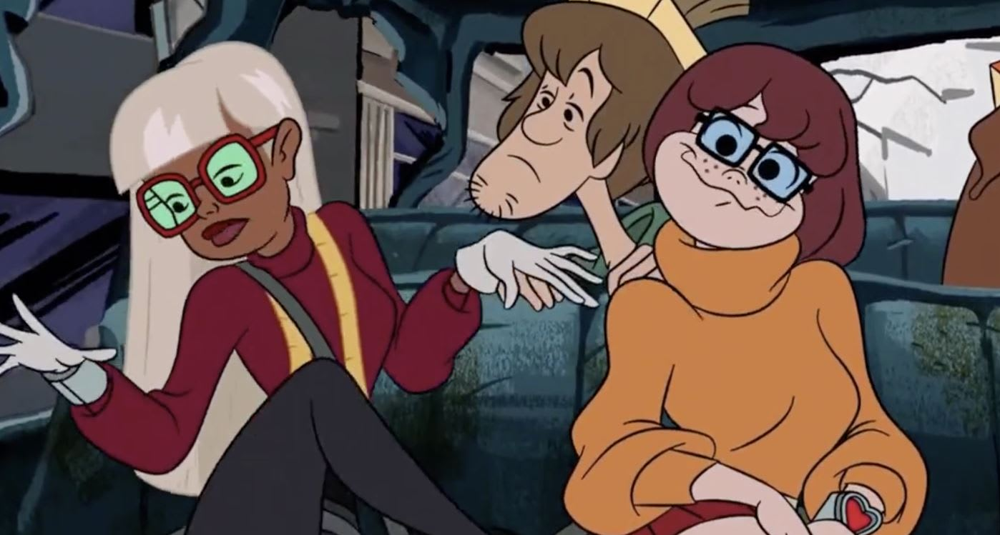

Why I Like: Scooby Doo (Mystery Inc)
I like Scooby Doo because it's a show I've grown up with. I watched multiple of the series but Mystery Incorperated is my favorite.
My main reasons for liking this show are:
- the artstyle is cute
- i enjoy this version of the characters most
- the voice acting is nostalgic
The Artstyle:
I like the artstyle becasue it's simple and blocky, but the characters have clear sillouettes and can be easily identified despite the simplicity. A lot of modern cartoons, for children or for adults lose this sense of silhouette within their characters and then the designs get easily cluttered, blurred, and mistaken with each other once colors are removed. It's important for a character to be recognizable without their colors and other features. this cartoon does that amazingly.
The Characters:
The characters personalities change from show to show, but in Mystery Inc their dynamics are my favorite. (I was not the biggest fan of Velma dating Shaggy, I'm a lesbian Velma defender. But that is ALL.)

Some movies will make Fred mean or Daphne really airheaded, or Velma extra rude, and I like how this version didn't do any of that. They're just silly!
Fred Jones
Fred is my favorite of all the characters, his design is a very simple take on the rich high school student who still doesn't care much for how other people see him and just wants to have fun
He is also good representation for autism (despite it being accidental) and it helps a lot of people feel more seen. the best representation tends to be by accident.
Other interpretations of his character begin to deteriorate his main traits. Example:the live action movies make him more of the asshole jock rich boy who is selfish and out of touch, but that strays so far from the original Freds. He is out of touch, but not in a rude way. He is more caught up in his own world of monster hunting and caring for his friends.
Mystery Inc. Fred >>>
The Voice Acting:
There is something about early 2000s shows that have a certian mic quality, or the way they deliver their lines that makes me happy. Newer shows don't have it since I understand it sounds clearer or nicer now. Though, I will always prefer older shows because of that older mic quality